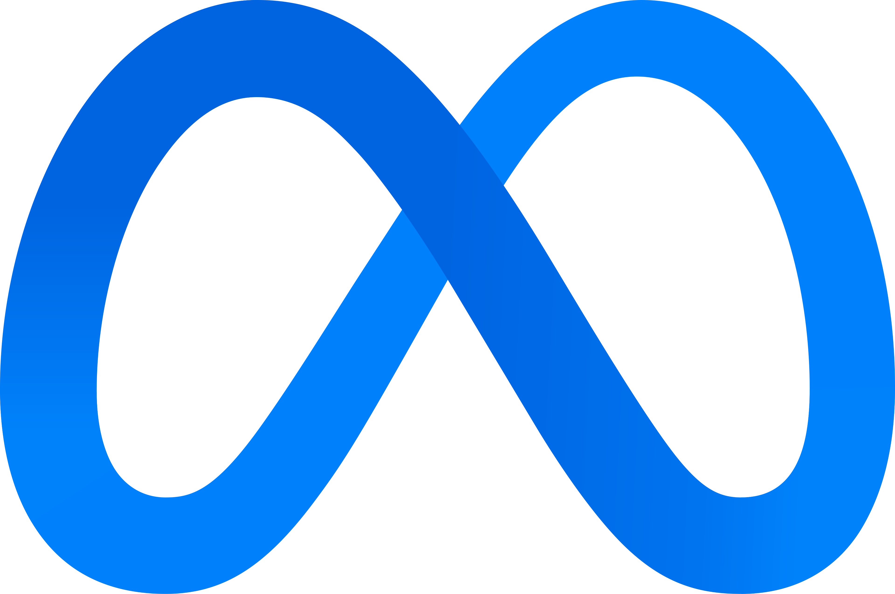
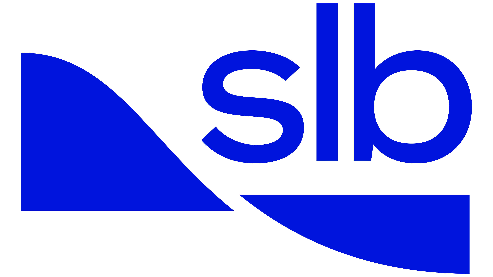
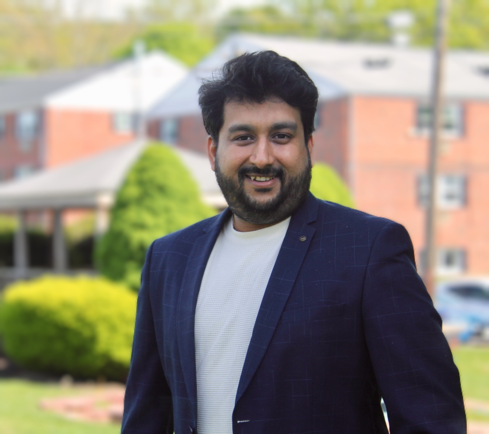

Skanda Bharadwaj
PhD Candidate @ Penn State | Computer Vision & Machine Learning
I’m a PhD candidate in Computer Science at Penn State University, advised by Prof. Yanxi Liu and Prof. Robert Collins at the Laboratory for Perception, Action, and Cognition (LPAC). I develop computer vision and machine learning methods that recover geometric structure and human motion cues from visual data, with a focus on scene understanding, recurring pattern discovery, and stability estimation. I also completed my Master’s in Computer Science at Penn State, focusing on motion estimation in ultrasound imagery using deep learning and Kalman filtering under Prof. Mohamed Almekkawy.
My industry experience includes internships at Meta as a Machine Learning Engineer (Summer 2026 and Summer 2025) with the Video Ecosystem Ranking team, where I worked on the Facebook Recommendation System, and at SLB as a Research Scientist Intern (Summer 2024), where I worked on real-time segmentation pipelines for environmental monitoring. Prior to graduate school, I worked for over three years at Continental as a Computer Vision Engineer (2015 - 2018), developing multi-object tracking and traffic sign recognition algorithms for ADAS systems in collaboration with global automotive OEMs.
Email: skanda.bharadwaj@psu.edu
Affiliations & Experience



Publications
For the complete and up-to-date list, see my Google Scholar profile .
Recent & Selected
-
FootFormer: Estimating Stability from Visual Input
K. Kraiger, J. Li, Skanda Bharadwaj, J. Scott, R. T. Collins, Y. Liu
arXiv preprint arXiv:2510.19170 , 2025. -
Recurrence-Based Vanishing Point Detection
Skanda Bharadwaj, R. T. Collins, Y. Liu
IEEE/CVF Winter Conference on Applications of Computer Vision (WACV), pp. 8927–8936. IEEE, 2025.
[PDF] -
Novel 3D Scene Understanding Applications from Recurrence in a Single Image
S. Zhang, Skanda Bharadwaj, K. Kraiger, Y. Asthana, H. Zhang, R. Collins, Y. Liu
arXiv preprint arXiv:2210.07991 , 2022.
Earlier Work
-
An Upgraded Siamese Neural Network for Motion Tracking in Ultrasound Image Sequences
Skanda Bharadwaj, S. Prasad, M. Almekkawy
IEEE Transactions on Ultrasonics, Ferroelectrics, and Frequency Control, 68(12), 3515–3527, 2021.
[PDF] -
Deep Learning Based Motion Tracking of Ultrasound Image Sequences
Skanda Bharadwaj, M. Almekkawy
IEEE International Ultrasonics Symposium (IUS), pp. 1–4, 2020.
[PDF]
Earlier publications (2015–2019) are listed on Google Scholar.
News
- 2025 — Our work “FootFormer: Estimating Stability from Visual Input” was presented at the 36th British Machine Vision Conference (BMVC), Sheffield, UK.
- 2025 — Started an internship at Meta as a Machine Learning Engineer with the Video Ecosystem Ranking team.
- 2025 — Presented our work “Recurrence-Based Vanishing Point Detection” at the IEEE/CVF Winter Conference on Applications of Computer Vision (WACV), Tucson, Arizona.
- 2022 — Our paper “Novel 3D Scene Understanding Applications From Recurrence in a Single Image” is available on arXiv.
- 2021 — Our paper “An Upgraded Siamese Neural Network for Motion Tracking in Ultrasound Image Sequences” was published in IEEE Transactions on Ultrasonics, Ferroelectrics, and Frequency Control (TUFFC).
- 2020 — Presented our paper “Deep Learning-Based Motion Tracking of Ultrasound Image Sequences” at the IEEE International Ultrasonics Symposium (IUS).
- 2020 — Presented our paper “Faster Search Algorithm for Speckle Tracking in Ultrasound Images” at the 42nd Annual International Conference of the IEEE Engineering in Medicine and Biology Society (EMBC).